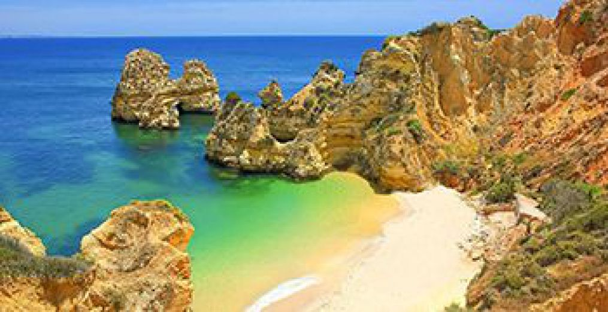
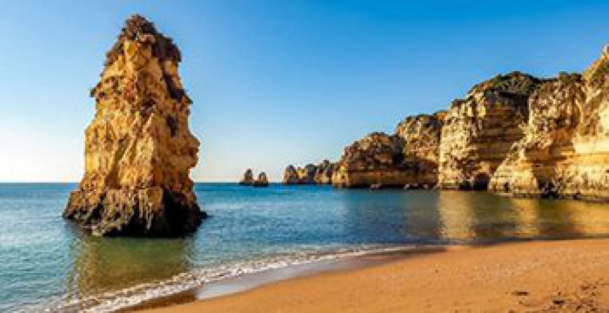
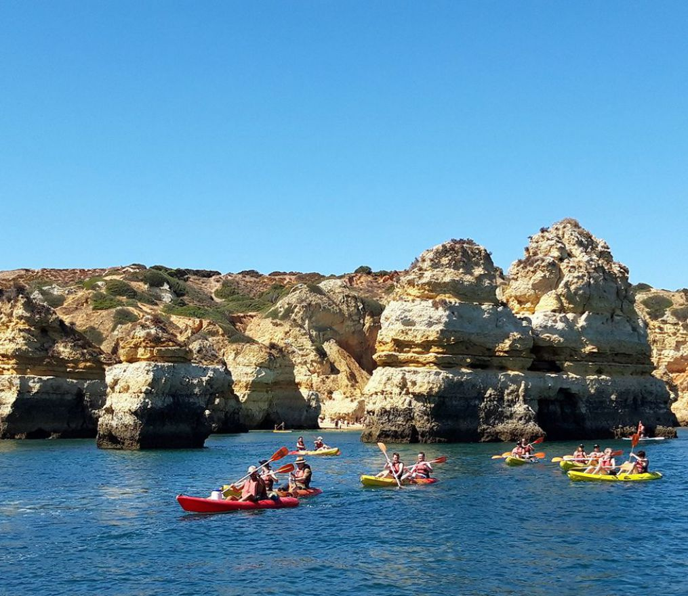
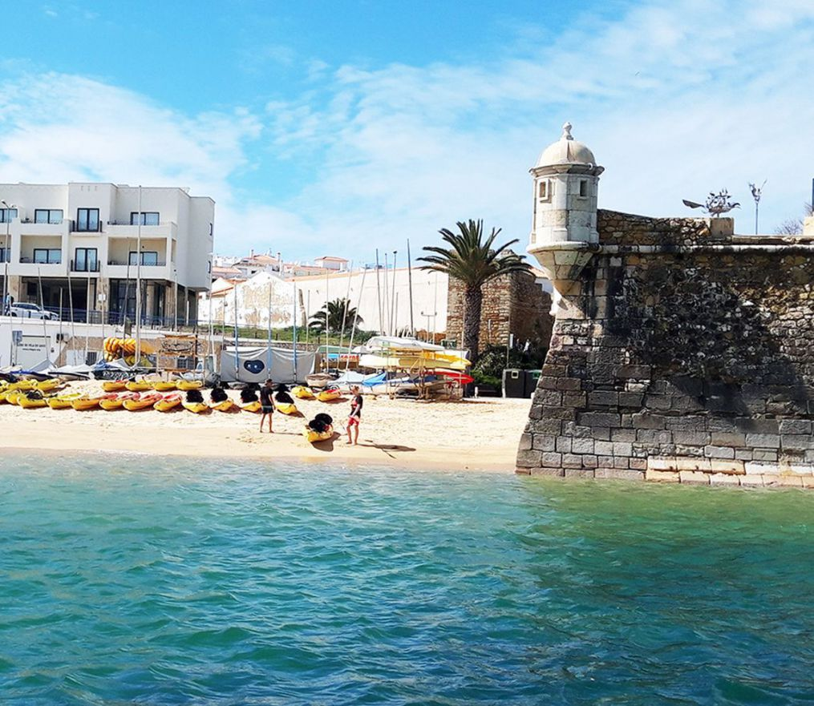

Descubra a magia da Ponta da Piedade e as praias secretas do Algarve numa aventura inesquecível de kayak.
Experiências únicas na costa mais bonita de Portugal
Equipamento certificado, guias experientes e briefing completo antes de cada tour.
Acesso a grutas e praias secretas que só são acessíveis por kayak.
Máximo 12 pessoas por tour para uma experiência personalizada e exclusiva.
Vistas deslumbrantes, águas cristalinas e memórias para a vida toda.

Centenas de aventureiros felizes compartilham as suas experiências
Momentos capturados nas nossas aventuras




Dois momentos curtos reais dos nossos tours no mar.
Reserve o seu tour de kayak e descubra a costa mais bonita de Portugal.
Reservar Agora2 minutos que vão fazer-lhe querer estar connosco amanhã
@kayakadventureslagos